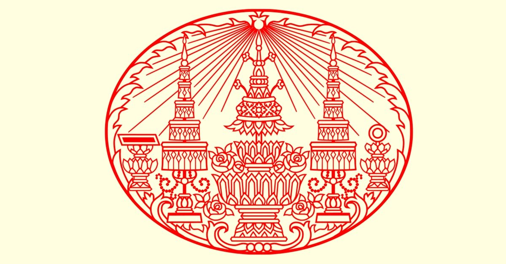

พระบาทสมเด็จพระจุลจอมเกล้าเจ้าอยู่หัว มีพระนามเดิมว่า " เจ้าฟ้าจุฬาลงกรณ์ " เป็นพระราชโอรสในพระบาทสมเด็จพระจอมเกล้าเจ้าอยู่หัว รัชกาลที่ 4 กับสมเด็จพระเทพศิรินทราบรมราชินี ( สมเด็จพระนางรําเพยภมรภิรมย์ ) พระองค์ประสูติเมื่อวันที่ 20 กันยายน พ.ศ. 2396 ตรงกับวันอังคาร แรม 3 คํ่า เดือน 10 ได้ทรงรับสถาปนาเป็นกรมหมื่นพิฆเนศวรสุรสังกาศ และกรมขุนพอนิจประชานาถ
ด้านการศึกษา พระองค์ทรงได้รับการศึกษาเป็นมาอย่างดี คือ ทรงศึกษาอักษรศาสตร์ โบราณราชประเพณี ภาษาบาลี ภาษาอังกฤษ ภาษาไทยรัฐประศาสนศาสตร์ วิชากระบี่ กระบอง วิชาอัศวกรรม วิชามวยปลํ้า การยิงปืนไฟ เมื่อพระชนมายุได้ 16 พรรษา ได้ขึ้นเถลิงถวัลยราชสมบัติโดยมีสมเด็จเจ้าพระยาบรมมหาศรีสุริยวงศ์เป็นผู้สําเร็จราชการ พ.ศ. 2410 พระเจ้านโปเลียนที่ 3 แห่งฝรั่งเศส ได้ส่งพระแสงกระบี่มาถวาย ครั้นพระชนมายุครบที่จะว่าราชการได้ พระองค์จึงได้ทรงทําพิธีราชาภิเษกใหม่อีกครั้งหนึ่ง เมื่อ พ.ศ. 2416 ทําให้เกิดผลใหญ่ 2 ข้อ
1. ทําให้พวกพ่อค้าชาวต่างประเทศหันมาทําการติดต่อกับพระองค์โดยตรง เป็นการปลูกความนิยมนับถือกับชาวต่างประเทศได้เป็นอย่างดีเยี่ยม
2. ทําให้พระองค์ มีพระราชอํานาจที่จะควบคุมกําลังทหารการเงินได้โดยตรงเป็นได้ทรงอํานาจในบ้านเมืองโดยสมบูรณ์
การปกครอง พ.ศ. 2446 มีพระราชบัญญัติ ลักษณะเกณฑ์ทหารการปกครองฝ่ายทหาร และพลเรือน จึงแยกจากกันโดยสาเหตุ
1. กรมต่างๆ ทํางานไม่เท่ากัน
2. เกิดมีช่องทางทุจริตให้พนักงานในกรมบางกรม
3. อํานาจของเสนาบดีแต่ละกรม เลื่อนไปจากเดิม
4. หน้าที่ฝ่ายกรมต่างๆ ทางทหารและพลเรือนปนกันยุ่งมาก
5. เสนาบดีมีเกียรติไม่เสมอกัน เพราะงานเป็นต้นเหตุ
ประกอบกับพระองค์ได้รับรายงานแบบแผนการจัดคณะเสนาบดี จากสมเด็จกรมพระยาเทววงศ์โรปการ ซึ่งขณะนั้นยังอยู่ที่ยุโรป พระบาทสมเด็จพระจุลจอมเกล้าเจ้าอยู่หัว ทรงกําหนดให้คณะเสนาบดี จัดเป็นกระทรวงเดิม มี 12 กระทรวง แก้ไขจนเหลือ 10 กระทรวง คือ
1. กระทรวงมหาดไทย
2. กระทรวงกลาโหม
3. กระทรวงการต่างประเทศ
4. กระทรวงนครบาล
5. กระทรวงวัง
6. กระทรวงพระคลังมหาสมบัติ
7. กระทรวงเกษตรพานิชการ
8. กระทรวงธรรมการ
9. กระทรวงโยธาธิการ
10. กระทรวงยุติธรรม
การปกครองมณฑลได้วางระเบียบการปกครองแบบลักษณะเทศาเทศาภิบาลขึ้นตั้งแต่ พ.ศ. 2437 - 2439 มณฑลทั้ง 6 นี้ จึงเปลี่ยนแปลงไปตามลักษณะมณฑลเทศาภิบาลด้วยการปกครองแบบนี้ มีผู้บัญชาการมณฑลเป็นผู้บริหารงานในมณฑลนั้นๆ ตามนโยบายของเสนาบดี ตําแหน่งหน้าที่ราชการ มีการให้เงินเดือนสร้างบ้านพักหลวงให้อยู่อาศัย งดการกินเมืองแบบเก่าๆ
พระบาทสมเด็จพระจุลจอมเกล้าเจ้าอยู่หัว ทรงเห็นว่าทาสมักจะถูกนายเงินกดขี่ข่มเหง ต้องทํางานอาบเหงื่อต่างนํ้า ทาสบางคนที่ไม่ทําตามคัาสั่งจะถูกลงโทษอย่างทารุณ ถึงเลือดตกยางออก แม้จะทําผิดเพียงเล็กๆน้อยๆ พระองค์ทรงพระเมตตาต่อมนุษย์ ด้วยทรงเห็นว่าไม่ยุติธรรม ยังทรงมีพระราชดําริด้วยว่า การมีทาสเป็นเครื่องถ่วงความเจริญของชาติการเลิกทาส พระพุทธเจ้าหลวงทรงเห็นว่าควรลดจํานวนทาสลงจึงทรงตราพระราชบัญญัติลดทาส เมื่อ พ.ศ. 2411 จนกระทั่ง พ.ศ. 2448 จึงมีพระราชบัญญัติเลิกทาส ทาสที่ปรากฎในสมัยพระบาทสมเด็จพระจุลจอมเกล้าเจ้าอยู่หัวมีอยู่ 7 พวกคือ
1. ทาสสินไถ่ คือ ทาสที่ขายตังเองหรือถูกคนอื่นขายให้แก่นายเงิน ต้องทํางานจนกว่าจะหาเงินมาใช้แทนเงินราคาขาย จึงจะหลุดเป็นไท
2. ทาสในเรือนเบี้ย คือ ลูกทาสที่เกิดจากพ่อแม่ในขณะเป็นทาสนายเงินอยู่ ลูกที่ออกมาก็ตกเป็นทาสไปด้วย
3. ทาสได้มาแต่บิดามารดร คือ ลูกทาสที่เกิดจากพ่อ หรือ แม่ที่เป็นทาส
4. ทาสท่านให้ คือ ทาสของคนอื่นที่ยกให้กับอีกบุคคลหนึ่ง ซึ่งมีค่าเหมือนยกสิ่งของเปลี่ยนมือกัน
5. ทาสที่ช่วยมาจากโทษทัณฑ์ คือ ทาสที่ถูกคดีความ พอช่วยให้พ้นโทษแล้วก็เอามาใช้เป็นทาส
6. ทาสที่เลี้ยงไว้เมื่อเกิดทุพภิกขภัย คือ ทาสที่ได้มาจากคนที่ถูกภัยธรรมชาติหมดตัว ไม่สามารถเลี้ยงตัวเองได้ ยามข้าวยากหมากแพง
7. ทาสเชลย คือ ทาสที่แม่ทัพนายกองได้มาจากส่วนแบ่งเชลยจากการออกรบสงคราม
พระบาทสมเด็จพระจุลจอมเกล้าเจ้าอยู่หัว ทรงดําเนินนโยบายด้วยพระปรีชาญาณอย่างสุขุมรอบคอบ ทรงดําเนินงานเพื่อเลิกทาสด้วยวิธีการต่างๆ ตั้งแต่ พ.ศ. 2417 ถึง พ.ศ. 2448 ทรงเลิกทาสแต่ละจําพวกด้วยวิธีการต่างๆคือ
ทาสเชลย ได้รับการปลดปล่อยให้เป็นอิสระได้เมื่อมีอายุ 60 ปี
ทาสนํ้าเงิน ให้หมดค่าตัวเมื่ออายุ 60 ปี เช่นเดียวกับทาสเชลย
เมื่อคราวเฉลิมพระชนมพรรษาเมื่อ พ.ศ. 2420 พระองค์ทรงมีพระชนม์ได้ 24 ชันษา ซึ่งนับจํานวนวันได้ 8.766 วัน ( ปีละ 365 วัน 24 ครั้ง กับวันที่ 29 กุมภาพันธ์ อีก 6 ครั้ง ) ทรงบริจาคพระราชทรัพย์จํานวน 8.767 บาท ไถ่ถอนทาสได้ 44 คน ทาสทั้ง 44 คน ที่ได้รับการไถ่ถอนนั้น ทรงกําหนดให้เป็นพวกที่อยู่กับนายเงินรายเดียวมาไม่ตํ่ากว่า 25 ปี เพราะทรงพระราชดําริว่า " พวกเขาคงเป็นคนดีมากกว่าคนชั่ว นายเงินคนเดิมจึงยังคงเก็บตัวพวกเขาไว้เป้นสมบัติของตนไม่ขายต่อให้พ้นๆไปเสีย"
พ.ศ. 2417 ได้ออกพระราชบัญญัติลูกทาส หญิงชายเกิดตั้งแต่ ปีมะโรงอายุ 21 ปี ให้หลุดเป็นไทแก่ตน ลูกที่พ่อแม่จะขายให้ไปเป็นทาสต้องมีอายุไม่ตํ่ากว่า 15 ปี และลูกต้องยินยอมตามกรมธรรม์ด้วย
พ.ศ. 2448 ออกพระราชบัญญัติเลิกทาสทั่วราชอาณาจักร ห้ามการซื้อขายทาส และบรรดาลูกทาสก็ให้ปลดปล่อยเป็นไทให้หมด พวกที่เป็นทาสเก่าให้ลดค่าตัวลงเดือนละ 4 บาท จนหมดค่าตัว
การออกกฎหมาย ได้อาศัยพวกลูกขุนช่วยเหลือพวกลูกขุน มี 2 พวก คือ
1. ลูกขุน ณ ศาลาได้แก่พวกข้าราชการและเสนาบดี
2. ลูกขุน ณ ศาลหลวงได้แก่ ผู้พิพากษาคดี มาเลิกใช้ใน พ.ศ. 2416 หลังจากที่พระองค์ทรงกลับจากประพาสอินเดีย พระองค์ได้นําเอาแบบการมีสภาของอินเดียมาใช้ พ.ศ. 2417 จึงโปรดให้ตั้งมนตรีสภาขึ้นสองสภา คือ รัฐมนตรีสภา กับ องคมนตรีสภา
ที่สําคัญคือการตัดผมชาย ให้ใช้แบบสากลเลิกทรงผมมหาดไทย หญิงไว้ผมยาว เครื่องแบบทหารก็เปลี่ยนแบบฝรั่ง เครื่องแบบข้าราชการพลเรือนเต็มยศ ใช้เสื้อแพรสีกรมท่าปักทองมีขอบคอและขอบข้อมือ ส่วนเวลาปรกติใช้เสื้อปิดคอ มีผ้าผูกคออย่างฝรั่ง ผ้านุ่งใช้ผ้าม่วงทั้งฝ่ายทหารและพลเรือน ต่อมาภายหลัง เสื้อให้ใช้เปลี่ยนเป็นเสื้อคอปิด นิยมใช้กันอย่างแพร่หลายมาจนถึง พ.ศ. 2475
พระองค์ได้ทางเร่งรัดการปฎิรูปทางการทหาร ให้ทันสมัยเลียนแบบยุโรปได้ส่งราชโอรสไปศึกษาวิชาทหาร ณ ยุโรป ปรับปรุงยุทธวิธีทางทหาร ยุบตั้งกรมกองต่างๆ เพิ่มขึ้น รวม 9 กรม กรมทหารบก 7 กรมทหารเรือ 2 กรม
พ.ศ. 2430 ได้ตราพระราชบัญญัติ ทหารขึ้นรวมกรมทหารเรือ เป็นกรมยุทธนาธิการตั้งโรงเรียนนายร้อยทหารบกขึ้น
พ.ศ. 2345 ตั้งกระทรวงกลาโหม มีหน้าที่บัญชาการรบทางทหารทั่วไป
ปราบฮ่อครั้งที่ 1
ฮ่อคือพวกจีนกบฎไทเผ็งของจีน การปราบฮ่อครั้งที่ 1 เริ่มเมื่อ พ.ศ. 2418 ได้โปรดให้พระยามหาอํามาตย์เป้นทัพที่ 1 เจ้าพระยาพิชัยเป็นทัพที่ 2 เจ้าพระยาภูธรภัยเป็นทัพที่ 3 ตีพวกฮ่อแตกหนีไปจากชายแดนไทย
ปราบฮ่อครั้งที่ 2
เมื่อ พ.ศ. 2421 โปรดให้กองทัพเมืองทางเหนือไปก่อน ภายหลังให้เจ้าพระยาศรีธรรมมาธิราช ซึ่งในขณะนั้นเป็นพระยาวัชรานุกูลเป็นทัพหนุน แต่ปราบพวกฮ่อไม่สําเร็จ เจ้าพระยาศรีธรรมาธิราชถูกกระสุนปืนของพวกฮ่อต้องถอยทัพกลับคืน
ปราบฮ่อครั้งที่ 3
เมื่อ พ.ศ. 2428 โปรดให้กรมหลวงประจักษ์ศิลปาคมซึ่งขณะนั้นยังเป็นกรมหมื่นทัพที่ 1 เจ้าพระยาสุรศักดิ์มนตรีซึ่งขณะนั้นเป็นหมื่นไวยยวรนารถ เป็นแม่ทัพยกไปทางเมืองหลวงพระบางเป้นทัพที่ 2 การรบครั้งนี้ พวกฮ่ออ่อนน้อมต่อไทย
ปราบฮ่อครั้งที่ 4
พวกฮ่อเผาเมืองหลวงพระบาง ได้โปรดให้เจ้าพระยาสุรศักดิ์มนตรียกกองทัพไปปราบจนพวกฮ่อแตกหนีไป
หลังจากปราบฮ่อแล้วฝรั่งเศสได้ส่งทหารเข้ายึดหัวเมืองสิบสองจุไทย และหัวพันทั้งห้าทั้งหก ไทยจะเจรจาอย่างไร ฝรั่งเศสก็ไม่ยอมถอนทหารออกไป ผลที่สุดไทยก็ต้องยอมยกให้ฝั่งเศสไปโดยปริยายและเปลี่ยนชื่อใหม่เป็น "เดียนเบียนฟู"
พ.ศ. 2435 ฝรั่งเศส พยายามเรียกร้องเอาดินแดนทางฝั่งซ้ายของแม่นํ้าโขงจากไทย แต่ไทยไม่ยอมให้ฝรั่งเศส ฝรั่งเศสได้รวบรวมเอาทหารญวนบุกรุกเข้ามาในเขตแดนฝั่งซ้ายแม่นํ้าโขงของไทย แต่ไทยไม่ยอมในวันที่ 26 กรกฎาคม พ.ศ. 2436 ฝรั่งเศสได้ส่งเรือรบมาปิดปากอ่าว และส่งทหารเข้ายึดเกาะสีชัง ไทยมีกําลังไม่พอจึงยอมปฎิบัติตามคําเรียกร้องของฝรั่งเศส
พ.ศ. 2435 ฝรั่งเศส พยายามเรียกร้องเอาดินแดนทางฝั่งซ้ายของแม่นํ้าโขงจากไทย แต่ไทยไม่ยอมให้ฝรั่งเศส ฝรั่งเศสได้รวบรวมเอาทหารญวนบุกรุกเข้ามาในเขตแดนฝั่งซ้ายแม่นํ้าโขงของไทย แต่ไทยไม่ยอมในวันที่ 26 กรกฎาคม พ.ศ. 2436 ฝรั่งเศสได้ส่งเรือรบมาปิดปากอ่าว และส่งทหารเข้ายึดเกาะสีชัง ไทยมีกําลังไม่พอจึงยอมปฎิบัติตามคําเรียกร้องของฝรั่งเศส
พ.ศ. 2449 ไทยต้องทําสัญญาอีกฉบับ ยกเขมรส่วนในมีเมืองพระตะบอง เสียมราฐ และศรีโสภณให้ฝรั่งเศสเพื่อแลกกับเมืองตราด และเกาะทั้งหลาย ซึ่งอยู่ใต้แหลมสิงห์ลงไปจนจดเกาะกูด
พ.ศ. 2452 อังกฤษเริ่มเข้ามารุกรานไทยเพราะอังกฤษเห็นฝรั่งเศสบีบไทยได้อังกฤษจึงทําบ้าง ซึ่งครั้งนี้ไทยต้องเสียกลันตัน ตรังกานู ปลิส และเกาะใกล้เคียงให้กลับอังกฤษ
พ.ศ. 2434 พระเจ้าชาร์ นิโคลาส ที่ 2 แห่งประเทศรัสเซียได้เสด็จมาประพาสประเทศไทย เป็นการต้อนรับที่เต็มไปด้วยไมตรี
พ.ศ. 2440 พระบาทสมเด็จพระจุลจอมเกล้า พระบาทสมเด็จพระจุลจอมเกล้าเจ้าอยู่หัว ได้เสด็จประพาสยุโรปเป็นครั้งแรก
พ.ศ. 2431 พระองค์ได้ทรงอาราธนา พระราชาคณะให้มาช่วยชําระคัมภีร์พระไตรปิฎกให้เป็นที่เรียบร้อย
พ.ศ. 2441 ที่เมืองกบิลพัสดุ์ ได้มีผู้พบพระอัฐิธาตุของพระพุทธเจ้าอุปราชอินเดียมาควิสเตอร์ซัน ได้จัดชิงพระบรมสารีริกธาตุมาถวาย
พ.ศ. 2445 โปรดให้ตราพระราชบัญญัติ ลักษณะปกครอง คณะสงฆ์เพื่อที่จะได้จัดสังฆมณฑลให้เป็นที่เรียบร้อย แบ่งคณะมหาเถระสมาคมออกเป็น 4 คณะใหญ่ด้วยกันคือ คณะกลาง คณะเหนือ คณะใต้ และคณะธรรมยุติกนิกาย
พ.ศ. 2435 จัดตั้งระเบียบการศึกษาพระศาสนาให้มีสนามสอบไล่ พระปริยัติธรรม ได้โปรดให้ตั้งกระทรวงธรรมการขึ้นเพื่อควบคุม
โปรดให้สร้างวัดต่างๆขึ้นมาหลายวัด เช่น วัดเทพศิรินทราวาส วัดเบญจมบพิตร วักราชบพิธ วัดจุฑาธรรม วัดนิเวศน์ธรรมประวัติ ทรงจําลองพระพุทธชินราชมาจากพิษณุโลก มาประดิษฐานเป็นพระประธานอยู่ที่วัดเบญจมบพิตร รวบรวมพระพุทธรู)ที่ตกค้างมาประดิษฐไว้นอบระเบียงวัดเบญจมบพิตร ตั้งมหาธาตุวิทยาลัย
โปรดให้ตั้งโรงเรียนหลวงขึ้นในพระบรมมหาราชวัง และได้โปรดให้พระยาศรีสุนทรโวหาร ( น้อย ) เป็นอาจารย์ใหญ่
พ.ศ. 2424 โปรดให้จัดตั้งโรงเรียนฝึกหัดผู้ที่ต่อไปจะทําหน้าที่นายร้อยนายสิบ
พ.ศ. 2425 จัดตั้งโรงเรียนนายทหารมหาดเล็ก
พ.ศ. 2430 จัดตั้งกรมศึกษาธิการ
พ.ศ. 2435 โปรดให้ตั้งกระทรวงกรรมการ เป็นกระทรวงเสนาบดี และตั้งโรงเรียนฝึกหัดครูขึ้นเป็นแห่งแรกที่โรงเรียนเบญจมราชูทิศ เดี๋ยวนี้โดยมีครูเป็นชาวอังกฤษ
พ.ศ. 2439 โปรดให้มีการสอบคัดเลือกนักเรียนส่งไปเรียนต่อต่างประเทศ 6 คน
พ.ศ. 2440 ให้มีการสอบชิงทุนขึ้นเป็นครั้งแรก
พ.ศ. 2444 ตราพระราชบัญญัติว่าด้วยกรรมสิทธิ์ของผู้แต่งหนังสือ ออกประกาศใช้บังคับ
พ.ศ. 2445 ส่งข้าหลวงไปดูงานการศึกษาที่ประเทศญี่ปุ่น
พ.ศ. 2447 ได้โปรดให้รวมหอสมุดวชิรญาณ หอพระมณเฑียรธรรม หรือหอพระพุทธสังคหะ รวมกันตั้งเป็นหอสมุดแห่งชาติ
พระบาทสมเด็จพระจุลจอมเกล้าเจ้าอยู่หัว ครองราชสมบัตินานถึง 42 ปี เสด็จสู่สวรรคตเมื่อวันที่ 23 ตุลาคม พ.ศ. 2453 ( ตรงกับวันอาทิตย์ ) พระองค์ทรงมีพระสมมัญนามอีกสองอย่างคือ พระพุทธเจ้าหลวง และพระปิยะมหาราช มีพระราชโอรสและพระราชธิดารวม 77 พระองค์ ประสูติก่อนราชาภิเษก 2 พระองค์ หลังราชาภิเษกแล้ว 75 พระองค์ เมื่อหลังจากสวรรคตแล้ว พระราชโอรสพระบาทสมเด็จพระมงกุฎเกล้าเจ้าอยู่หัวพระยุพราชได้ชักชวนประชาชนร่วมกันบริจาคสร้างพระบรมรูปทรงม้าไว้เพื่อเป็นอนุสาวรีย์
เป็นรูปพระจุลมงกุฎเปล่งรัศมี บนพานแว่นฟ้า เป็นสัญลักษณ์ของ พระบรมนามาภิไธย "จุฬาลงกรณ์" มีฉัตรตั้งขนาบข้าง ริมขอบสองข้าง มีแว่นสุริยกานต์ข้างหนึ่ง กับสมุด ตำราข้างหนึ่งวางอยู่บนพานแว่นฟ้า
พระราชลัญจกรประจําพระองค์รัชกาลที่ ๕